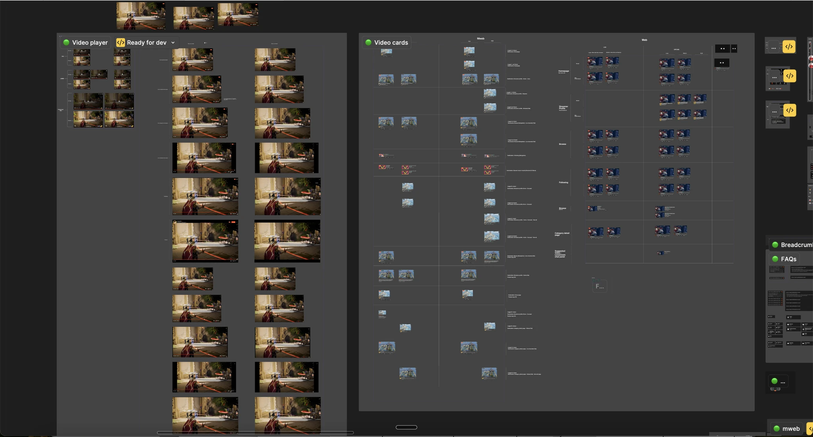
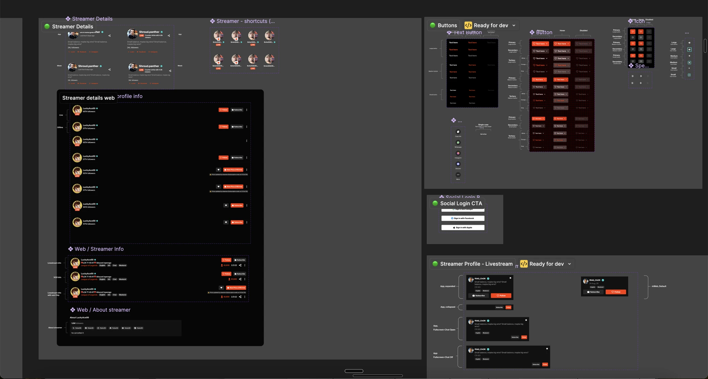
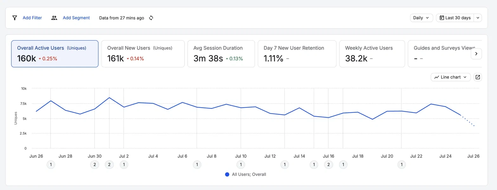
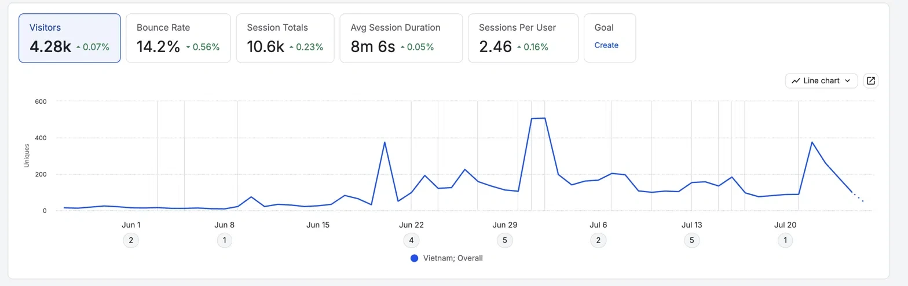

Desktop

Old UI

New UI, after final style guide
Loco: Viewer experience · Visit Loco →
A full visual rebrand of Loco's viewer experience across app, web, and mobile web, delivered against a launch date that could not move.
Loco is a premier Indian live-streaming and esports platform dedicated to gaming entertainment. Users can watch top streamers, follow major esports tournaments, and broadcast their own gameplay using the companion Loco streaming Dashboard. It is available globally across Android, iOS, and web browsers.
Key takeaway
Semantic tokens turned a missing brand from a blocker into a variable. When the final identity arrived with one week left, we applied it across the entire product in a single evening instead of a two to three week screen-by-screen rebuild. All 160k active users held through the transition.
1
Evening to apply the final
brand across the product
85%
Of screens shipped from
shared components
160k
Active users held
through the rebrand
90%+
Of screens passed the
post-launch consistency audit
Context
Refresh the entire visual language across three platforms in four weeks, without changing a single user flow, and without the final brand in hand.
Loco was redesigning its viewer experience across the app, web, and mobile web. For its audience, the app is the product, so a visual overhaul of that surface carried real risk.
The deadline was set by an external event, not by us. The refreshed product was going to be shown at iGB L!VE in London, an industry event at ExCeL that draws around 15,000 attendees. That was the version global partners and press would see, so the date could not move by a single day.
Working backwards from that date produced four constraints that shaped every decision after it.
My role
Product Designer on the viewer experience, owning four of the highest-traffic surfaces alongside the shared component work the rest of the team built on.
I was responsible for designing several high visibility experiences, including the Homepage, Livestream, Fullscreen Livestream, and Leaderboard.
Rather than recreating reference screens one by one, I focused on building reusable components that could be shared across the team. My goal was to make each screen easy to maintain while keeping the experience consistent across different platforms.
Since several designers were working in parallel, regular conversations became just as important as the components themselves. We frequently aligned on visual decisions to reduce differences before they spread across the product.
Approach
Rather than treat the constraints as background, I used them to set scope. Each one had a design response, and naming those responses early is what kept six people building the same product.
Constraint 01
Constraint 02
Constraint 03
Constraint 04
The decision that mattered
Engineering asked for tokens to simplify light and dark theming. The bigger use case was that tokens would let the whole team build the product against a brand that had not been delivered yet.
By referencing semantic roles instead of fixed hex values, the missing identity stopped being a blocker and became a variable. Everyone could build on placeholders, and the real brand could be swapped in later, everywhere, at once.
Every component I built referenced tokens rather than colours. At the time it felt like a technical improvement. It turned out to be the decision that saved the launch.
Asset slot: token architecture
A Figma screenshot of the semantic token structure goes here, ideally showing role names mapped to values. This is the single strongest image for this case study because it proves the decision the whole story turns on.
The system
The library had to serve three platforms and five other designers at once, which meant components needed to hold up in contexts I would never see myself. Building for that from the start cost more in week one and paid back every week after.
Around 85% of screens shipped entirely from shared components, with no bespoke mockups needed.


Old UI
New UI, after final style guide
A change log was maintained for each key screen, so the team could trace what moved and why.

Old UI

New UI, before final style guide

New UI, after final style guide
Delivery
With four weeks, it was not practical to mock every screen before development began, so we let the system carry the specification instead. Clear styling guidelines acted as the single source of truth, which let engineers build most screens without waiting on detailed mock ups.
That only works if someone answers the gaps quickly. My teammate and I stayed embedded through implementation, tracking Slack and staying available in the war room, usually resolving component questions within the hour. Some needed a new screen, most only needed a decision on how an existing component should behave.
What I took from it was a sharper read on what engineers need under deadline. Their questions were rarely about the design itself. They were about reducing uncertainty so they could move forward with confidence. A well structured system answers most of those before they are asked, and being present answers the rest fast enough that builds never stall on design.
Asset slot: process artifacts
A FigJam alignment board, a change log screen, or a redacted war-room thread. One image is enough here. It should show the working method, not the polish.
Outcome
Three weeks in, the agency delivered the final brand: new colours, gradients, iconography, with one week left before launch.
Because every component referenced semantic tokens, we applied the new identity across the entire product in a single evening. The manual alternative was estimated at two to three weeks of screen-by-screen updates, which would have pushed us past the iGB L!VE date. A quiet decision made in week one saved the launch in week three.
The success criterion was continuity: change how the product looks without changing how it behaves. Thirty days after launch, every headline engagement metric sat within a quarter of a percent of its pre-launch value, and around 85% of screens shipped entirely from shared components with no bespoke mockups needed.
Overall active users
160k
0.25% change
Overall new users
161k
0.14% change
Avg. session duration
3m 38s
up 0.13%
Weekly active users
38.2k
held through launch

For a redesign whose explicit goal was continuity, holding 160k active users steady through a full rebrand is the result: a new identity introduced without costing the business a point of engagement, and no spike in UI-related support tickets through the transition.
Loco was pushing into new international markets around the same time, and the redesigned experience became the front door for that expansion. In Vietnam, traffic climbed from a near-flat baseline to a steady state several times higher, and the quality of those sessions held: a 14.2% bounce rate, an average session of 8m 6s, and 2.46 sessions per user, meaning people were returning rather than passing through.

What I learned
Creating reusable components is only part of the job. The bigger challenge is helping people use them consistently. Even with a well structured system, six designers under deadline pressure will make six slightly different calls, however good the library is.
Looking back, I would introduce lightweight checkpoints throughout the project instead of reviewing everything after the work was complete. A fifteen minute shared component review before any flow was marked ready would have caught most inconsistencies at the source, without slowing the team down.
The durable lesson
It is a shared decision making tool, and its value comes from how reliably the team reaches for it under pressure. That is a people problem as much as a craft one, and it is the part I would invest in earlier next time.